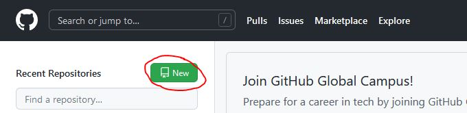
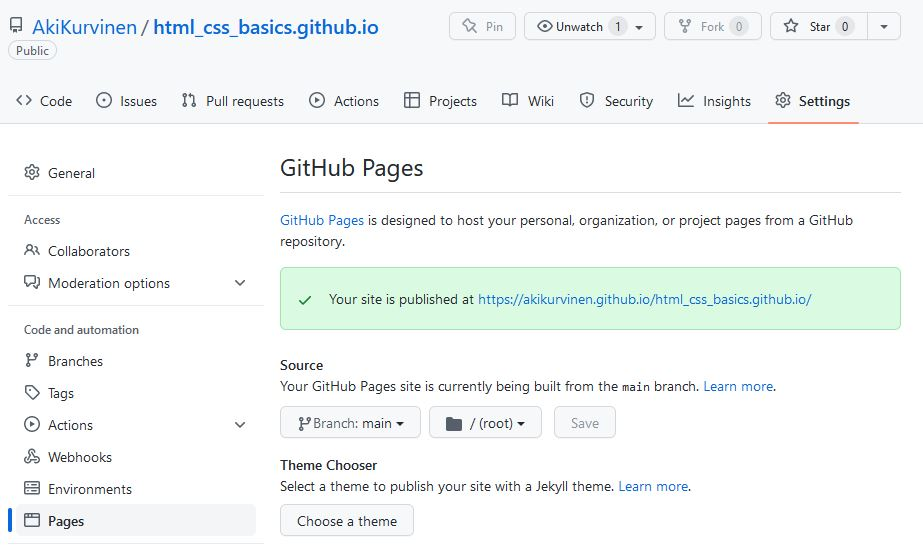
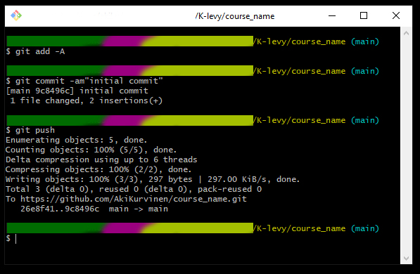

GitHubin käyttö
Tee uusi repository New napista

Anna repolle kuvaava nimi joka päättyy .github.io
Huomioi ääkköset ja
välimerkit
Description kohtaan lyhyt kuvaus repon sisällöstä
Private = Vain
sinulla ja valitsemillasi henkilöillä on oikeus nähdä repon sisältö
Add
a README file = Lisää dokumentaatiopohja repolle
Create repository

Palaa tarkista Settings välilehdeltä Pages kohdasta, että sivustosi on julkaistu.
Osoite tulee muotoon
(https://omanimi.github.io/html_css_basics.github.io/)
Valitse Source > Branch: main -> Save
Pitäisi näkyä viesti Your site is published at…
Takaisin Code välilehdelle
Code-napista saadaan esille repon HTTPS osoite
Kopioi osoite
leikepöydälle
(Esimerkkikuvissa käytössä git bash -terminaali, mutta muutkin toimii)
Avaa komentoikkuna K-levyllä oikeaan kansioon.
Kaikki komennot
suoritetaan painamalla Enter
Kopioidaan repo GitHubista paikalliselle
levylle:git clone [repo url]
Siirrytään juuri luotuun kansioon:cd [kansion nimi]
Jos oletus-koodieditori on määritelty, niin avataan kansio
editorissa:code .
Avaa README.md Notepadissa/Notepad++ tai muussa editorissa ja lisää
nimesi
Muista tallentaa muutokset
Seuraavaksi commitoidaan muutokset GitHubiin
(Paina kunkin rivin lopuksi Enter)
git add -Agit commit -am”initial commit”git push

Nyt muutokset on tallennettu GitHubiin ja voit tarkastella niitä GitHub
sivulla.
Jos painat commitin nimeä, voit vertailla uutta tiedostoa vanhaan
Muutokset repoon, päivittyvät myös nettisivullesi:
https://omanimi.github.io/